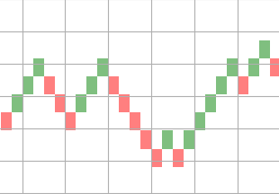

How To Plot Renko Charts With Python?
Renko charts are time independent and are efficient to trade as they eliminate noise. In this article we see how to plot renko charts of any instrument with OHLC data using Python.
To plot renko charts, we can choose a fixed price as brick value or calculate it based on ATR(Average True Range) of the instrument.
There are two types of Renko charts based on which bricks are calculated.
Renko chart - Price movement
First one is based on price movement. In this, we will divide the price movement of current duration by brick size to get the bricks.
Once bricks are obtained, we need to assign the brick colors based on the direction of price movement and then plot rectangles for each available brick.
import pandas as pd from matplotlib.patches import Rectangle import matplotlib.pyplot as plt brick_size = 2 def plot_renko(data, brick_size): fig = plt.figure(1) fig.clf() axes = fig.gca() y_max = max(data) prev_num = 0 bricks = [] for delta in data: if delta > 0: bricks.extend([1]*delta) else: bricks.extend([-1]*abs(delta)) for index, number in enumerate(bricks): if number == 1: facecolor='green' else: facecolor='red' prev_num += number renko = Rectangle( (index, prev_num * brick_size), 1, brick_size, facecolor=facecolor, alpha=0.5 ) axes.add_patch(renko) plt.show() df = pd.read_csv(file) df['cdiff'] = df['close'] - df['close'].shift(1) df.dropna(inplace=True) df['bricks'] = df.loc[:, ('cdiff', )] / brick_size bricks = df[df['bricks'] != 0]['bricks'].values plot_renko(bricks, brick_size)
Here is a sample renko chart plotted using the above code.

Renko chart - Period close
In this bricks are calculated based on the close price of the instrument. Calculation of bricks is sligtly complex compared to price movement chart. I have created a seperate package called stocktrends which has this calculation.
from stocktrends import Renko renko = Renko(df) renko.brick_size = 2 data = renko.get_ohlc_data() print(data.tail())
This will give OHLC data for the renko chart. Now we can use this values to plot the charts as mentioned above.

Written by
Chillar Anand
Musings about programming, careers & life.